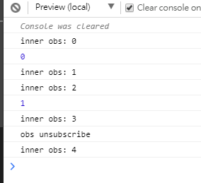

RxJS 裡面有許多 Operators 或是建立 Observable 的方法，而這篇文章就是要介紹 using 這一個建立 Observable 的方法
根據官方文件的說明，Using 是
Creates an Observable that uses a resource which will be disposed at the same time as the Observable.
1 | using<T>(resourceFactory: () => Unsubscribable | void, observableFactory: (resource: Unsubscribable | void) => ObservableInput<T> | void): Observable<T> |
Parameters
| Parameters | Description |
|---|---|
| resourceFactory | A function which creates any resource object that implements unsubscribe method |
| observableFactory | A function which creates an Observable, that can use injected resource object. |
Returns
Observable<T>: An Observable that behaves the same as Observable returned by observableFactory, but which - when completed, errored or unsubscribed - will also call unsubscribe on created resource object.
看不懂沒關係，來看一個簡單的程式碼就了解了
1 | import { using, Subject, merge, Subscription, interval } from 'rxjs'; |
執行結果:

當 observableFactory 結束時也會同時執行 resourceFactory 內所回傳的 subscription 物件的 unsubscribe 方法
subscription
subscription.add 裡面除了可以放入其他 subscription 外，也可以放入 function，當 unsubscribe 時，除了會將加到這一個 subscription 內的 subscriptions 給取消註冊外，也會執行所放入的 function，這個在特定情況下十分好用